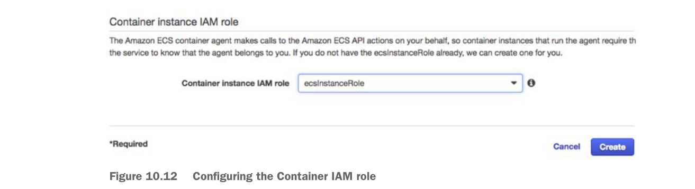

The default behavior is to create a new VPC. Don’t do that for this example. Select your default VPC where your database and Redis cluster are running.
Make sure you add all of the subnets that are in your VPC. Here, the VPC is running in the US-West-1 (California region), so there will only be two subnets.
You’re going to create a new security group with one inbound rule that will allow all traffic on port 5555. All other ports on the ECS cluster will be locked down. If you need more than one port open, create a custom security group and assign it.
Once the servers are set up, configure the network/AWS security groups used to access them.
Finally, you have to select to create a new security group or select an existing Amazon security group that you’ve created to apply to the new ECS cluster. Because you’re running Zuul, you want all traffic to flow through a single port, port 5555. You’re going to configure the new security group being created by the ECS wizard to allow all in-bound traffic from the world (0.0.0.0/0 is the network mask for the entire internet).
The last step that has to be filled out in the form is the creation of an Amazon IAM Role for the ECS container agent that runs on the server. The ECS agent is responsible for communicating with Amazon about the status of the containers running on the server. You’re going to allow the ECS wizard to create a IAM role, called ecsInstanceRole, for you. Figure 10.12 shows this configuration step.
Configuring the Container IAM role